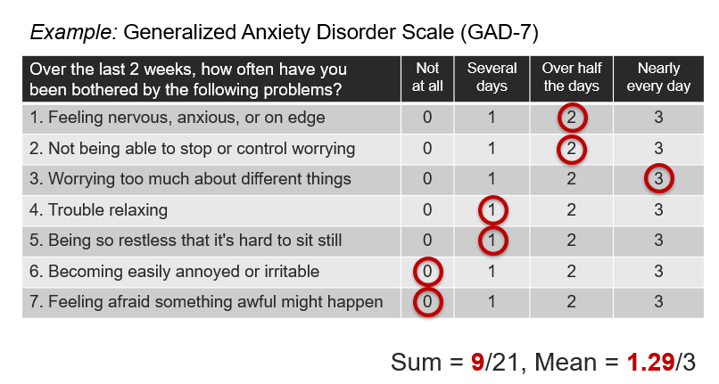

Measurement Validation
in Affective Computing
ACII 2023 | Jeffrey M. Girard
https://affcom.ku.edu/mvac
Constructs
Explanatory Latent Variables
To understand and predict events in the world, it often helps to hypothesize explanatory latent variables
These explanatory variables aren’t directly observable but rather are inferred from observations they explain
Examples of explanatory latent variables:
- Motivation explains people acting in pursuit of goals
- Engagement explains students paying close attention
- Irritability explains people being quick to anger
Constructs and Indicators
Hypothesized latent variables are called constructs
The observations that they explain are called indicators
Most constructs are estimated using “effect” indicators

Psychological Constructs
- Psychological constructs explain…
- Internally experienced thoughts and feelings
- Externally observable abilities and behaviors

Hierarchies of Constructs
- Constructs are often correlated with other constructs
- They may share similar mechanisms and indicators
- These relationships often from a construct hierarchy
- Higher-level constructs are more broad, general, abstract
- Lower-level constructs are more narrow, specific, concrete
- Construct hierarchies are very common and useful
- Can improve annotation, modeling, and prediction
Hierarchies of Constructs
Levels of Abstraction

Measurement
What is measurement?
We often want to know an individual, group, or object’s “standing” or score on a psychological construct
- How neurotic is a person in their day-to-day life?
- How engaged was the audience during the movie?
- How persuasive is this argument (to most people)?
- Is the person in the photograph smiling or not?
This means assigning a numerical score to it
We call this construct estimation or measurement
What is the measurement process?
By definition, constructs cannot be directly measured
So we must infer their scores from measured indicators
Estimating construct scores thus proceeds as follows:
- Select a set of indicators to represent the construct
- Measure each selected indicator for objects of interest
- Aggregate measures into estimated construct scores
Common measurement strategies
- Items-as-Indicators
- One rater completes many items of the same construct
- Commonly used in self-report questionnaires
- Raters-as-Indicators
- Many raters complete a single item of a construct
- Commonly used in observer rating scales
- Hybrid Approaches (Advanced)
Self-report questionnaires
Self-report questionnaires ask participants to indicate their own standing on one or more constructs
Questionnaires are composed of multiple items, each of which is responded to using a numerical rating scale
Each item is meant to measure a single indicator
Construct scores are often estimated by summing or averaging all items that correspond to that construct (though sophisticated methods include PCA, SEM, and IRT)
Self-report questionnaires
Self-report questionnaires
- Assumptions of numerical questionnaires
- All items are measuring the same construct*
- All items are equally important/central to the construct*
- All items were correctly understood by the participants
- Pros and cons of self-report questionnaires
- Common, efficient, and good for internal phenomena
- Can be subjective and influenced by self-report biases
*These assumptions can be tested and even relaxed with advanced methods.
Observer rating scales
Observers or raters are individuals who view stimuli (e.g., multimedia) and provide scores on various constructs
These measurements are standardized using an instrument (e.g., coding scheme or rating scale)
Such instruments tell observers what to focus on and help them to make consistent measurements
The goal is to take out any unwanted subjectivity
Example Coding Scheme
A smile is a facial movement that pulls the mouth corners upwards and toward the ears (see examples below). You will view several images; please examine each image carefully and determine whether the image would be best described as either Smiling or Not Smiling.

Example Rating Scale
Persuasiveness is the capability of a person or argument to convince or persuade someone to accept a desired way of thinking. You will read several brief movie reviews in which a reviewer will argue that a movie is either worth watching or not worth watching. Use the following scale to indicate how persuasive you found each movie review to be overall.

Observer Ratings
- Assumptions of observer ratings
- The stimulus is rich enough to inform measurement
- The instructions are sufficient to standardize
- Observers can generalize to new examples
- Pros and cons of observer ratings
- Avoids many biases introduced by self-report methods
- Can be very inefficient and subjective (when done poorly)
- Can’t access internal states of the stimulus participants
Errors and Validity
What are measurement errors?
Measurement errors are differences between an object’s estimated score and its “true” standing on the construct
Measurement errors come from two main sources:
- Construct under-representation
- Failing to represent all aspects of the construct
- Construct-irrelevant variance
- Failing to be influenced by only the construct
- Construct under-representation
Construct under-representation
- The depression construct has many aspects
- Affective symptoms (e.g., low mood, anhedonia, irritability)
- Cognitive symptoms (e.g., problems in attention and concentration)
- Somatic symptoms (e.g., changes in sleep, appetite, energy, activity)
- Symptom duration (at least 2 weeks)
- Examples of under-representation
- A depression questionnaire omits items about cognitive symptoms
- An observer rates someone’s depression without symptom information
- A depression diagnosis algorithm only measures body motion/activity
- A depression diagnosis algorithm omits symptom duration information
Construct-irrelevant variance
- Examples from Psychology
- A patient’s sleep problems (from a newborn) are attributed to depression
- One doctor thinks a patient is depressed but another doctor doesn’t
- A participant reports feeling “frustrated” but not “angry”
- Participants report higher life satisfaction on Fridays than on Mondays
- Participants behave differently in the research lab than they do at home
- Examples from Affective Computing
- A facial recognition algorithm confuses two men with beards
- An emotion recognition algorithm mistakes a shouting athlete as angry
- A “drowsy driver” algorithm under-predicts drowsiness during the day
- A depression diagnosis algorithm confuses an accent with slurred speech
What are validity and validation?
Validity is the degree to which scores on an appropriately administered instrument support inferences about variation in the characteristic it was designed to measure.
Validation is the ongoing process of gathering, summarizing, and evaluating relevant evidence concerning the degree to which that evidence supports the intended meaning of scores yielded by an instrument and inferences about standing on the characteristic it was designed to measure.
Contemporary Validity Theory
Validity applies to inferences, not instruments
Validity varies across populations and contexts
Validity is integrative and singular
Validity exists on a continuum
Validation is an ongoing process
Validation has three main phases:
(substantive, structural, and external)
Why does validation matter?
Ginsberg et al. (2009) used ML to predict flu pandemics from Google searches faster than traditional CDC methods, but Lazer et al. (2014) later found that it was merely predicting seasonality and the model completely missed nonseasonal influenza
Liu et al. (2015) found that positive emotional expressions online were not related to self-reported life satisfaction, but it is difficult to argue against past theories because the inconsistency could be due to measurement errors
Ribeiro et al. (2016) found that an ML model learned to distinguish between images of Huskies and Wolves by merely looking for the presence of snow yet many participants trusted the model before learning about this relationship
Bleidorn & Hopwood (2019) and Tay et al. (2020) find that validity issues may be holding back ML approaches to personality assessment
Jacobucci & Grimm (2020) found that predictors/features with low reliability (an aspect of validity) attenuate predictive performance, especially for ML algorithms
Substantive Phase
Defining the construct’s breadth, scope, and indicators
Substantive Phase
Does the construct definition make sense?
Do the selected indicators represent the construct well?
- Show that there is not construct under-representation
- Show that there is not construct-irrelevant variance
Are the items/scales being understood/used as intended?
Is the instrument being administered properly?
Literature Review
How has this construct been defined before?
What are the main aspects of this construct?
What are the main indicators of this construct?
How is it related to and distinct from other constructs?
How has it been measured in previous work?
What theories are relevant to this construct?
What support is there for these theories?
Construct Conceptualization
Provide a precise definition of the construct
Create a list of indicators for the construct
Create a list of related constructs / hierarchies
Create a Venn Diagram of related constructs
- Draw partially overlapping circles for each construct
- In the overlap, describe what makes them similar
- In the non-overlap, describe what makes them distinct
Examples of related constructs
- Main Construct: Depression
- Related Constructs: stress, anxiety, sadness
- Main Construct: Engagement
- Related Constructs: attention, participation, understanding
- Main Construct: Emotional Support
- Related Constructs: empathy, advice, financial support
Item development and mapping
For each aspect of the construct, generate a list of indicators
Create multiple “candidate” items/scales for each indicator
Have experts review the list of aspects, indicators, and items
Pilot test the items/scales and refine based on feedback
Select the best items/scales based on pilot testing
Ensure representation of all aspects in final selection
Response Processess
Consider how participants will respond to items/scales
Are participants understanding the questions?
Are participants understanding the response options?
Are participants choosing responses as you intended?
Cognitive interviewing and think-aloud techniques
- Ask participants to rephrase each question
- Ask participants why they chose each answer
- Ask participants to think out loud during test
Test Administration
Consider where/how the instrument will be completed
Are there any distractions in the environment?
Are there any biasing factors in the environment?
Are there any sources of error in the procedure?
Are there any test security issues (e.g., cheating)?
Structural Phase
Relationships among internal variables
Inter-Item Reliability
Are scores consistent across items?
Average inter-item correlation (simplistic)
Congeneric CFA (confirmatory factor analysis)
- Each item \(x_j\) is influenced by one construct \(f\)
- The strength of this influence \(\lambda_j\) varies per item
- Each item also has unique/error variance \(e_j\)
\[x_j = \lambda_jf + e_j\]
Inter-Item Reliability

Inter-Item Reliability
McDonald’s omega
Reliability of the factor scores \(f\) is captured by \(\omega_u\)
How much of the score \((x)\) variance is explained by \(f\)?
\[\omega_u = \frac{(\Sigma_j\lambda_j)^2}{\sigma_x^2}\]
- \(\omega_u \in (0, 1)\), higher is better
Inter-rater and test-retest reliability
Are scores consistent across raters or time?
- Categorical Ratings:
- Chance-adjusted agreement (kappas)
- Continuous Ratings:
- Intraclass correlations (ICCs)
Overview of kappas
- How much agreement was observed?
- Did raters assign the same items to the same categories?
- Can be generalized (Gwet, 2021, Vol. I)
- Any number of categories and raters
- Ordered categories (via weights)
- Missing/unbalanced rating data
Generalized observed agreement
Weighting scheme (partial credit for close errors)
\[r_{ik}^\star = \sum_{l=1}^{q}w_{kl}r_{il}\]
Observed agreement
\[p_o = \frac{1}{n'}\sum_{i=1}^{n'}\sum_{k=1}^{q}\frac{r_{ik}(r_{ik}^\star-1)}{r_i(r_i-1)}\]
Generalized chance agreement
- How much agreement would we expect from chance?
- Category-based (e.g., Bennett et al.’s \(S\)) \[p_c^S=\frac{1}{q}\sum_{k,l}w_{kl}\]
- Distribution-based (e.g., Cohen’s \(\kappa\), Scott’s \(\pi\), Kripp.’s \(\alpha\)) \[p_c^\pi=\sum_{k,l}^qw_{kl}\left(\frac{1}{n}\sum_{i=1}^n\frac{r_{ik}}{r_i}\right)\left(\frac{1}{n}\sum_{i=1}^n\frac{r_{il}}{r_i}\right)\]
Overview of kappas
- How much possible non-chance agreement was achieved? \[\kappa = \frac{p_o-p_c}{1-p_c}=\frac{\text{Observed Non-Chance Agreement}}{\text{Possible Non-Chance Agreement}}\]
- \(\kappa\in(-1,+1)\), higher is better
- \(\kappa\ge.60\) is acceptable, \(\kappa\ge.80\) is good
- Interval estimates are recommended
- Hypothesis testing \(\kappa\) vs. zero is not
Overview of ICCs
How much score variance is due to items vs. raters?
- If the raters are consistent, that variance should be low
- Thus, most of the variance should be due to items
Variance components can be estimated many ways
- e.g., from ANOVA, MLM, or SEM
- ten Hove et al. (2022) extended to missing data
\(ICC\in(-1,+1)\) where higher is better
\(ICC\ge0.75\) is acceptable, \(ICC\ge0.90\) is good
Important ICC Questions
- One-way or two-way?
- One-way: different raters each time
- Two-way: same raters multiple times
- Single-measures or Average-measures?
- Single: a single rater’s scores will be used
- Average: the average of \(k\) raters’ scores will be used
- Agreement or consistency? (two-way only)
- Agreement: raters must agree exactly (absolute error)
- Consistency: raters can have different means (relative error)
One-way ICCs
One-way Single-Measures ICC \[ICC(1)=\frac{\sigma_i^2}{\sigma_i^2+\sigma_{r:i}^2}\]
One-way Average-Measures ICC \[ICC(k)=\frac{\sigma_i^2}{\sigma_i^2 + \sigma_{r:i}^2/k}\]
Two-way Agreement ICCs
Two-way Single-Measures Agreement ICC \[ICC(A,1) = \frac{\sigma_i^2}{\sigma_i^2 + \sigma_r^2 + \sigma_{ir}^2}\]
Two-way Average-Measures Agreement ICC \[ICC(A,k) = \frac{\sigma_i^2}{\sigma_i^2 + (\sigma_r^2 + \sigma_{ir}^2)/k}\]
Two-way Consistency ICCs
Two-way Single-Measures Consistency ICC \[ICC(C,1) = \frac{\sigma_i^2}{\sigma_i^2 + \sigma_{ir}^2}\]
Two-way Average-Measures Consistency ICC \[ICC(C,k) = \frac{\sigma_i^2}{\sigma_i^2 + \sigma_{ir}^2/k}\]
External Phase
Relationships with External Variables
Criterion Variables
A good score of X should be highly correlated with other, trusted measures of X (called criterion variables)
Do our scores correlate with criterion variables?
- Example: Depression scores
- Self-report scales (PHQ-9, BDI-2, QIDS-SR)
- Clinical interviews (SCID-5, HRDS-17, MADRS)
- Example: Depression scores
Nomological Network
A good score of X should correlate positively with A…
A good score of X should correlate negatively with B…
A good score of X should be uncorrelated with C…
Do our scores correlate with others as expected?
- Example: Depression scores (Kotov et al., 2010)
- Positive with neuroticism
- Negative with extraversion
- Unrelated to agreeableness
- Example: Depression scores (Kotov et al., 2010)
Related Groups
A good score of X should differ between groups A and B…
Do our scores differ between known groups?
- Example: Depression scores
- Between patient and community groups
- Example: Content Mastery scores
- Between trainee and instructor groups
- Example: Depression scores
Applied Examples
Smiling Around the World
Gathered ~290,000 facial images of celebrities
Used OpenFace 2.0 to measure smiling
- Smiling defined as activation of FACS AU12
Compared smiling between genders and countries
How should we go about validating our measure?
Smiling Around the World
Selected ~300 images (balanced gender, country, smile)
Each coded by 1 of 3 certified FACS coders for AU12 intensity
Each coded by 5 untrained crowdworkers
- Rated on positive emotion in image (0 to 5)
- Rated on smile intensity in image (0 to 5)
Correlations between openface, FACS coding, and ratings
Smiling Around the World
Perceived Emotional Expressivity
Recorded 96 participants interacting in 3-person groups
Want to predict “perceived emotional expressivity”
Developed a four-item rating scale for our construct
Collected ratings of each video from 8 crowdworkers
How to validate these measures?
Substantive Phase
How expressive was the person in this video (use your own understanding of what it means to be expressive)?
How much did the person in this video show their emotions (through their words and nonverbal behavior)?
How animated (lively, energetic, or active) was the person in this video?
How much did the person in this video react to the other people (through their words and nonverbal behavior)?
Structural Phase
Inter-Rater Reliability: \(ICC(C,8)\)

Structural Phase
Inter-Item Reliability

 \[\omega_u=0.966\]
\[\omega_u=0.966\]
Perceived Emotional Expressivity
External Phase: Nomological Network
- Expect positive correlation with extraversion (0.2 to 0.4)
- \(r=0.26\) (great!)
- Expect positive correlation with agreeableness (0.0 to 0.2)
- \(r=0.28\) (good but a little high)
- Expect weak correlation with neuroticism (–0.1 to 0.1)
- \(r=-0.07\) (great)
Activities
Activities Round 1
- Assess an applied paper in your area
- Is their construct conceptualization clear?
- Is their measurement well justified?
- Assess a measurement instrument in your area
- How much validity evidence did they provide?
- How could their validation be improved?
Activities Round 2
- Work on a construct conceptualization
- Write a definition and list indicators
- Compare and contrast related constructs
- Plan a measurement validation study
- Plan your validation sample and design
- Plan the three phases of validation